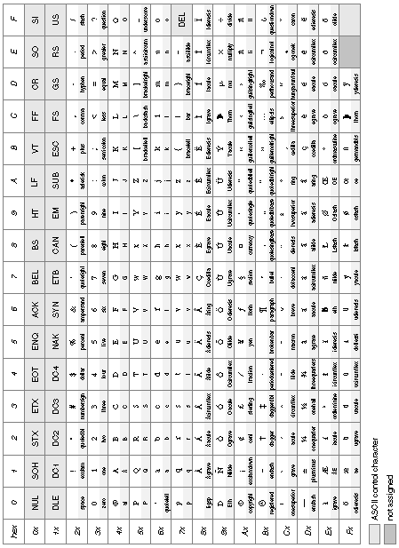
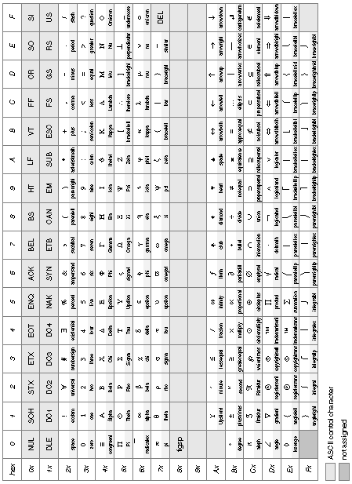
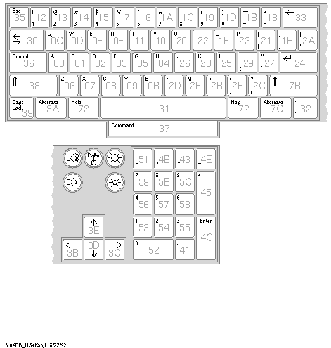
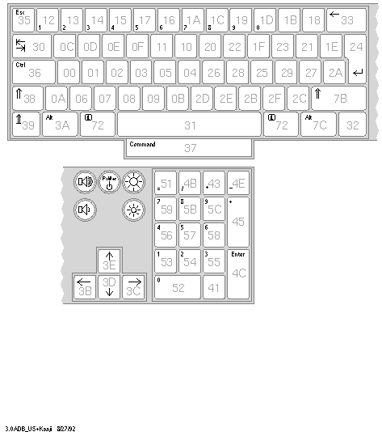
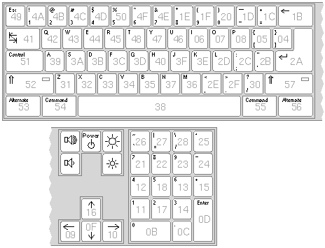
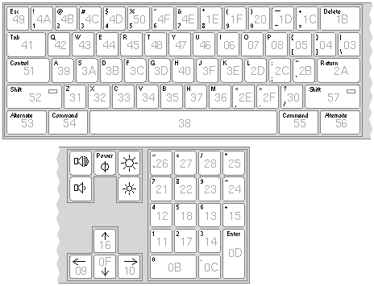

Copyright ©1995 by NeXT Computer, Inc. All Rights Reserved.
| C |
Keyboard Event Information
| Within NEXTSTEP, event records for keyboard-related events report the character set, character code, and key code. This chapter provides the encoding vectors for the character sets available in NEXTSTEP, and the key codes for some NeXT keyboards. |
| Encoding Vectors |
| The encoding vector for a character set maps character codes to particular characters. In the tables below that show the encoding vectors, the digit along the side is the first digit, and the one along the top is the second digit, of the character codes in hexadecimal. The light gray cells in the table denote ASCII control characters, and the dark gray cells are unassigned. The remaining cells are divided horizontally: The bottom portion displays the character's name, and the top shows a representation of the character itself.
The NEXTSTEP encoding vector is a superset of the PostScript language standard encoding vector. The characters that have code assignments in the standard encoding vector have the same assignments in the NEXTSTEP encoding vector. The NEXTSTEP encoding vector makes use of the code points that are unassigned in the standard vector to add characters from the ISOLatin1 character set. |
|  |
| Figure C-1. NEXTSTEP Encoding Vector |
|  |
| Figure C-2. Symbol Encoding Vector
The standard ASCII abbreviations are shown for the characters with codes 00 through 1F and 7F (such as CR for the Return character, 0D). The characters from 00 through 1F can be generated by holding down the Control key while typing the character whose code is 40 greater; alphabetic characters may be typed in either upper or lower case. For example, 07 is generated by holding down the Control key while pressing the key labeled G, since the character code for G is 47. The following table shows other ways of generating some of these control characters (assuming the standard key mapping): |
| Code | Abbreviation | Generated by | |
| Control-space | |||
| Enter key (or Command-Return) | |||
| Shift-Delete (backspace) | |||
| Tab key | |||
| Return key | |||
| Shift-Tab (backward tab) | |||
| Esc key | |||
| Delete key |
| Note: Except for Return, Tab, and Shift-Tab, the Application Kit's Text object remaps character codes below 20 to 00.
The character with code 80 is a figure space, a nonbreaking space with the same width as a numeral. A figure space is generated by holding down the Alternate key while pressing the space bar. The figure space should always be a nonbreaking space; in applications (like Edit) that break lines at normal spaces (code 20), lines don't break at nonbreaking spaces. You can't display a figure space with the show operator. The arrow keys generate the codes for the arrow symbols in the Symbol character set (codes AC through AF). With the Shift key down, the arrow keys generate character codes for the double arrows (codes DC through DF). For information on which characters are generated by other character keys, see the User's Guide. |
| Key Codes |
| The following figures show the key codes of several types of keyboards that can be attached to a NeXT computer.
Note: In the future, computers running NEXTSTEP will have keyboards that generate different key codes. |
|  |
| Figure C-3. Key Codes of the U.S. Keyboard with One Command Key |
|  |
| Figure C-4. Key Codes of the ISO Keyboard with One Command Key |
|  |
| Figure C-5. Key Codes of the ISO Keyboard with Two Command Keys |
|  |
| Figure C-6. Key Codes of the Original Keyboard |